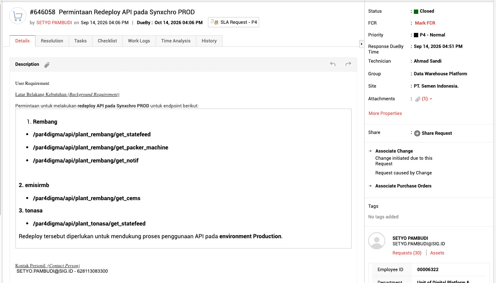
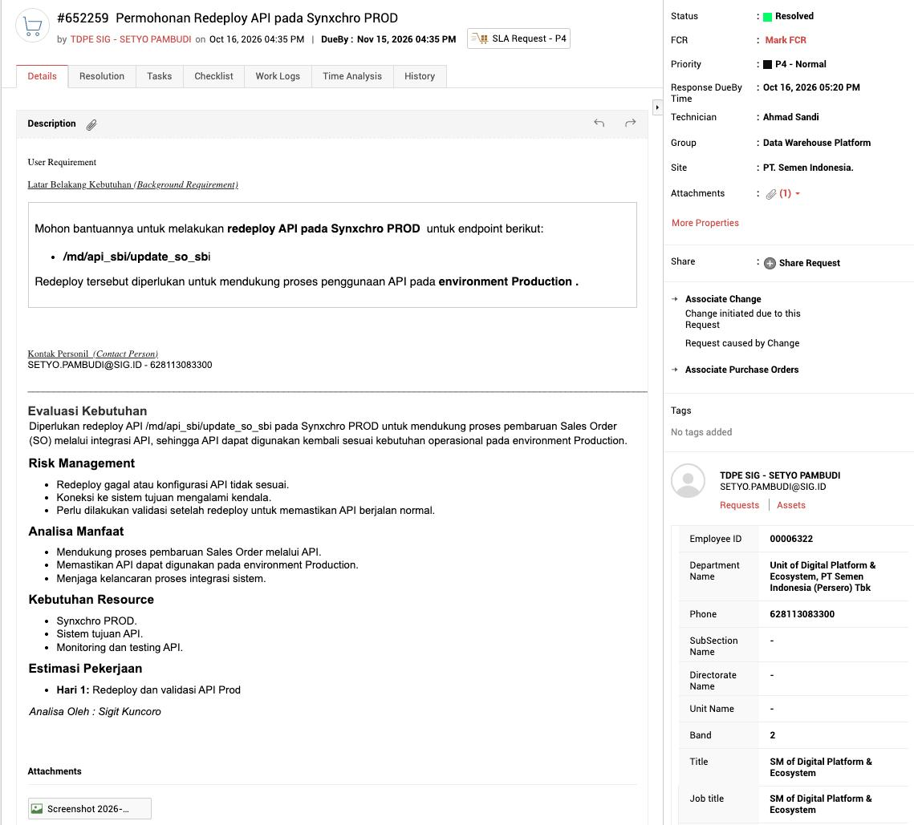
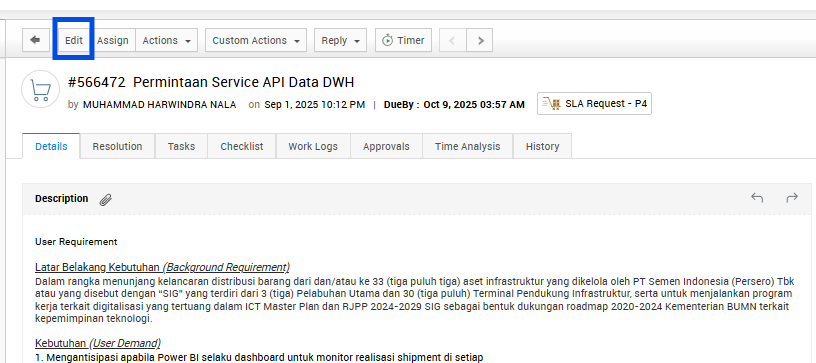

1.Ticket diterima

- Untuk mengetahui ada ticket baru, lihat pada pending request.
2.Cek deskripsi ticket & konfirmasi user

- Cek deskripsi ticket untuk memastikan permintaan terkait dengan project apa. Pastikan setiap rekan helpdesk mengerti maksud dan tujuan ticket tersebut.
- Setelah memahami maksud ticket, konfirmasi dengan User (PIC) yang bertanggung jawab untuk memastikan user mengetahui ticket tersebut.
3.Buat evaluasi

Evaluasi kebutuhan diisi pada body ticket (di dalam deskripsi ticket). Biasanya sudah ada format dengan poin yang perlu diisi:
- aEvaluasi Kebutuhan
- bRisk Management
- cAnalisa Manfaat
- dKebutuhan Resource
- eEstimasi Pekerjaan
- fAnalisa Oleh
Cara mengisi evaluasi
Buka menu Edit pada ticket:

Kemudian isi evaluasi kebutuhan sesuai format yang diminta:

Note: jika tidak ada format seperti gambar di atas, isi sendiri berdasarkan contoh di bawah ini.
Contoh evaluasi kebutuhan
Evaluasi Kebutuhan:
Diperlukan redeploy API /md/api_sbi/update_so_sbi pada Synxchro PROD untuk mendukung proses pembaruan Sales Order (SO) melalui integrasi API, sehingga API dapat digunakan kembali sesuai kebutuhan operasional pada environment Production.
Risk Management:
- Redeploy gagal atau konfigurasi API tidak sesuai.
- Koneksi ke sistem tujuan mengalami kendala.
- Perlu dilakukan validasi setelah redeploy untuk memastikan API berjalan normal.
Analisa Manfaat:
- Mendukung proses pembaruan Sales Order melalui API.
- Memastikan API dapat digunakan pada environment Production.
- Mengurangi input manual dan potensi human error.
- Menjaga kelancaran proses integrasi sistem.
Kebutuhan Resource:
- Synxchro PROD.
- Sistem tujuan API.
- Monitoring dan testing API.
Estimasi Pekerjaan:
Total : 1 Hari.
Analisa Oleh:
KING ANGGA
Note: tulisan berwarna biru harus diedit sesuai kebutuhan pada isi/deskripsi ticket.
Belum bisa membuat evaluasi sendiri?
Gunakan ChatGPT sebagai alat bantu dengan prompt berikut:
Terdapat ticket Request baru terkait dengan kebutuhan ...............(isi pemahaman kita sesuai permintaan pada ticket), dengan deskripsi sebagai berikut : .................(isi full deskripsi ticket) Berikut adalah contoh evaluasi kebutuhan pada ticket sebelumnya : .................(isi full contoh evaluasi kebutuhan) Buatkan evaluasi kebutuhan sesuai dengan contoh evaluasi kebutuhan di atas berdasarkan dengan permintaan pada ticket request baru.
Note: kata kunci pada prompt ini ada pada ticket request baru dan contoh evaluasi kebutuhan. Tujuannya memberi batasan agar hasil yang didapat tidak melebar.
Setelah evaluasi selesai
Ubah statusnya menjadi done evaluation:

Kemudian update request:

4.Kirim email ke requestor
Jika kegiatan terkait permintaan pada ticket sudah selesai dilaksanakan, status ticket perlu di-resolved.
- Email user tertera pada body ticket:
Template email

- Subject
- Notification/(nomor ticket)/(judul ticket)/(status ticket)
Dear Bapak/Ibu .........(sesuaikan nama dan panggilan user),
Sehubungan dengan (judul ticket) dengan nomor ticket (nomor ticket), dapat kami informasikan bahwa pengerjaan API telah selesai diproses.
Berikut kami lampirkan juga file Postman.
Terima kasih.
Best Regards,
(nama pengirim)
Notes:
- Email dikirim ke requestor sesuai data pada ticket.
- Cantumkan King Kardo pada CC.
- Lampirkan file Postman/JSON sesuai yang diterima dari tim Synxchro.